IN614 Multimedia Projects
By Samuel Martin
Project
Project Page
Documentation:
Which tools / applications were used and why?
-The tools I used to create my interactive animation was
Photoshop - For drawing all the sprites need in the animation.
Illustrator - For drawing shapes and simple objects.
Animate - For animating the sprites and making the animation interactive.
How you used the features of these tools / applications?
-I used:
Photoshop for drawing all of the sprites I used in my game.
I used layers to draw parts so they would not overlap or have to be drawn in a particular order.
Drawing on different layers allowed me to edit parts of a drawing without affecting the other parts of the drawing.

I also used this when pacing trees on the background as I wanted them to appear above the background.
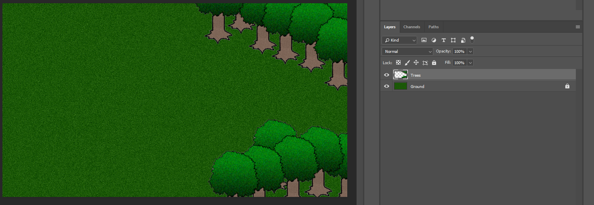Illustrator - For drawing the shape of the Arrow
I used the anchor tool to manipulate the path of the shape and turn it in to an arrow shape.
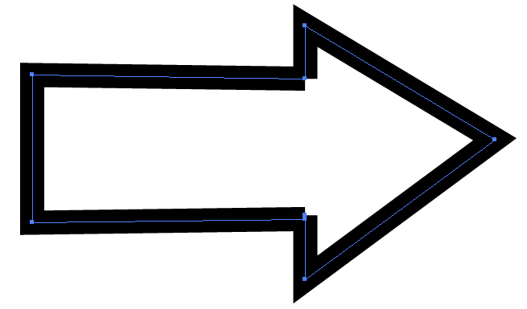Animate -
I created a Movie Clip for each direction the character faces and inside the Movie Clip I changed the sprite to make it look like he is walking.
I used the Motion Tween to move the character around the screen
Because I used motion tweens for every time the character moved I ended up using a lot of frames.
Onion Skin - When I was creating the animation for the character walking
I wanted to get the character alligned so he would not jump around the screen when walking.
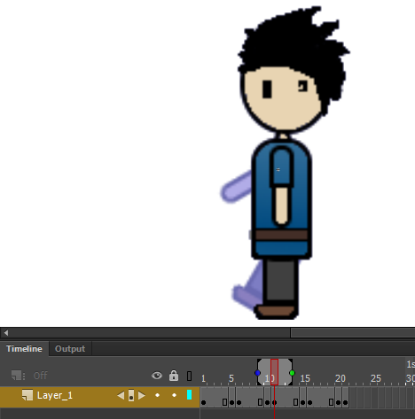On the main animation when the user clicks a button the charcter sometimes jumps to a close location.
This is because I was not able to use the onion skin to check the character positioning since some of the frames were separted by hundreds of frames.
So I placed the character closest to where I thought the origin was.
I used the Animate Code snippets to get the buttons to work when they were clicked on.
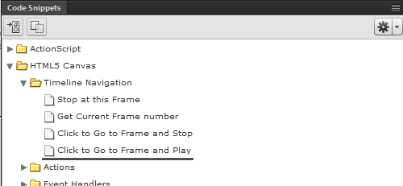I chose the 'click to go to frame and play option' because I wanted the animation to continue from a certain frame after a button had been clicked.
I also added in the 'this.stop' at the top so the animation would stop on this frame and wait for the user to click a button.
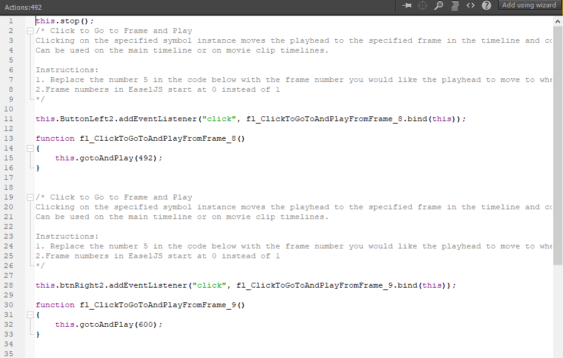I added a variable for the collectables to know wether they had been collected or not
I did this with an if statement which I coded myself
It checks whether the collectable is equal to 0 or 1 and goes to and plays the frame accordingly.
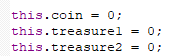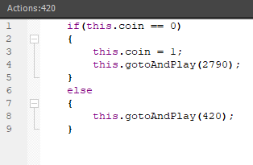
I added sounds into the animation in two ways
One was just dragging the sound file on to the frame so the sound plays when the frame plays.
The orange line on the frame represents the sound waves played on the frame.
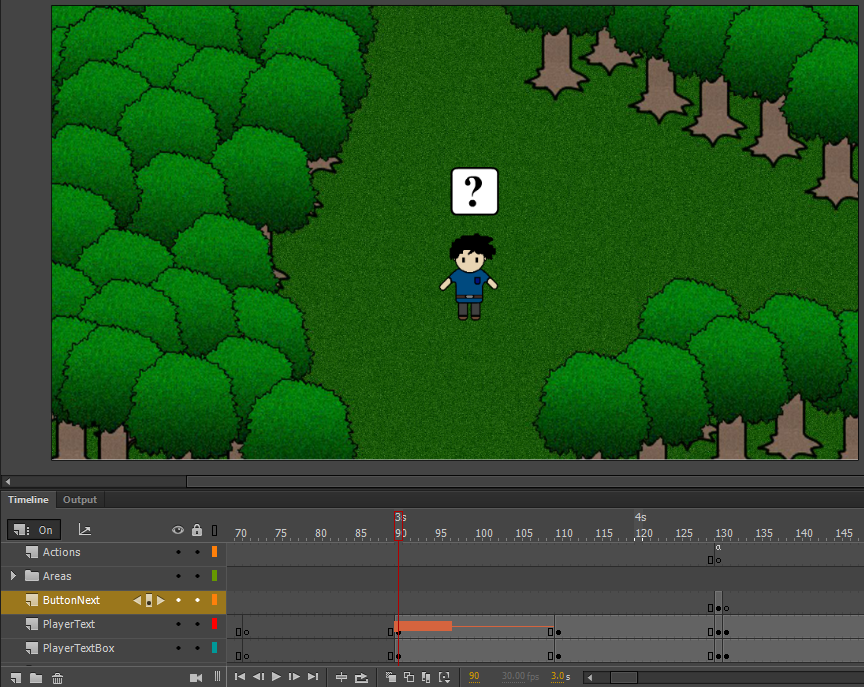Another way was on the button,
on the down frame of the button I adding the sound file so it would play when the button is pressed.
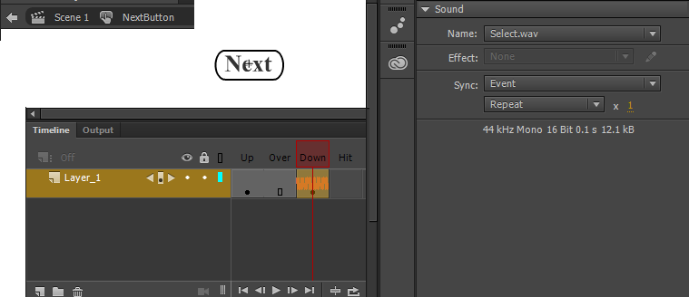Why you believe your use of tools / applications was competent
-I was able to create an interactable game by using the features of these programs.
Photoshop helped me to design images to use in the game and layer them to fit into the game and not overlap.
Adobe Animate helped me to be able to move a character around the screen and make this be influenced by user input when they click the arrows.
By using the frames, Movie Clips and buttons I was able to make an animation that was interactable with the user.
How you exported your work and why you did it that way
-Photoshop
I exported all of my drawings all as a .png
I did this because I wanted the quality of my drawings to be high quality.
I also wanted the background to be transparent and a .jpg is not .
For the Animate Project I exported it as a Canvas using these settings
I followed a guide on deploying Animate Projects here
https://helpx.adobe.com/animate/using/creating-publishing-html5-canvas-document.htmlI wanted the frame to be responsive to the browser and centered so I went with these settings when exporting:
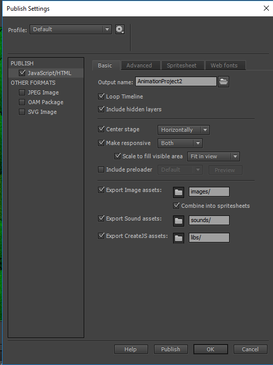How you managed assets during project work
-I used folders to organise all of my assets and made
I created backups for all of my drawings by keeping the original photoshop file so I could go back and edit it if I needed to change it.
Here are the image folders:
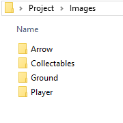Here are the image files inside the folder:
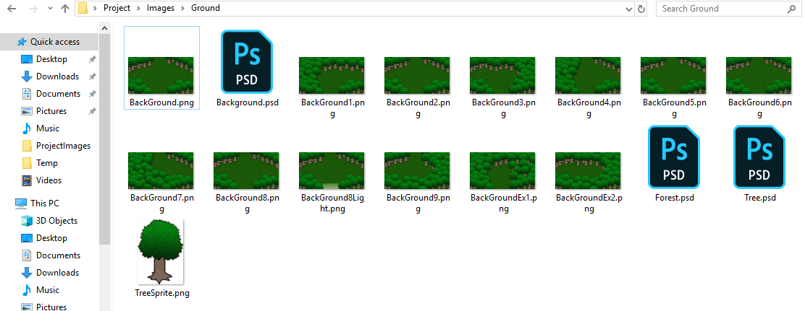In Animate I used the Library to store files used in the Project
I created folders for files that were similar such as the buttons and character direction Movie Clips.
This made it very easy to find what I was looking for and made the process faster.
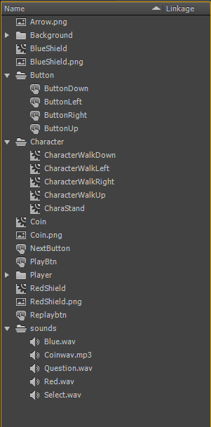Design Decisions:
How you used the elements and principles in your designs.
-My main focus was to have a game where you guide a charcter out of a maze.
I did this by adding arrows that allow the player to move around the maze and find the exit.
Due to time restraints I only made the maze a size of 3 by 3 with two extra areas.
I wanted to add some collectables in to the maze so the player has an extra goal other than reaching the exit.
An idea I had was to make the maze bigger but did not have the time or resources to complete this.
I also wanted a random maze so the next area would not be the same but was unable to add this due to time constaints.
For music I decided that having background music would take away from the atmosphere of the lost in a maze feel.
I added in sounds to give the user some audio feedback when they do an action or collect an item.
How your designs are consistent with conventions and existing material
I based my game on a click adventure game
I looked at some games of this style and how they play and decided to make a similar game.
I also looked at some top down perspective games and added in that aspect to the game as I like the look of this style.
I did this because the user would be able to see the character move around the screen based on their input.
I added some collectables for the user to find as an optional task for the user.
This would give the user a feeling of success when they collect these items.
What decisions you made about aesthetics and experience
-I originally wanted the charcter to move around based on arrowkeys instead of arrows but
I was not able to set up the collisons with the objects around.
Because this did not work I went for a button (arrow) that the user can click to go in a direction.
My idea then changed to a click adventure style game.
I created multiple characters on the title screen for giving the effect that he was lost and walking around.
I was tempted to use the same character from the last animation but his sprite size was too small and did not fit in with the surroundings.
This is why I decided to draw my own character based on hime.
At the start the character enters the screen from below, this is a hint to the player indictaing that the exit is in this direction.